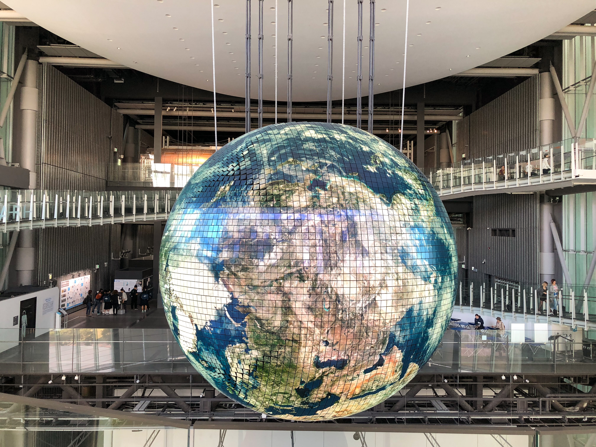
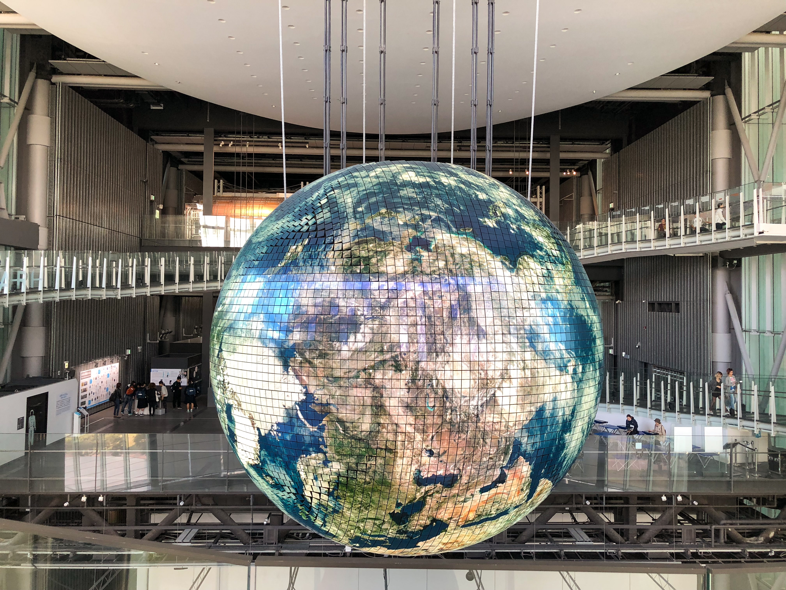

A Trip to Tokyo A trip to Tokyo can be an unforgettable experience. The city is a perfect blend of traditional and modern culture, with its bustling streets, vibrant nightlife and delicious food. The city has a rich history and many historic sites such as the Sensoji Temple and the Meiji Shrine.
When planning a trip to Tokyo, it is important to consider the time of year, as the city experiences four distinct seasons. Spring is the best time to visit if you want to see the cherry blossoms in full bloom, while fall offers mild weather and beautiful foliage. Summer can be quite hot and humid, and winter can be quite cold and snowy.
Things to Do and See
- Visit the Tokyo Skytree
- Explore the Tsukiji Fish Market
- Take a stroll in the Shinjuku Gyoen National Garden
- See a Kabuki Theater show
The city is also home to many museums and art galleries, including the Tokyo National Museum and the National Museum of Emerging Science and Innovation. Shopping is also a popular activity in Tokyo, with many department stores, boutiques, and markets to explore. Some popular shopping areas include Takeshita Street in Harajuku, the Ginza district, and the Akihabara electronics district.

 

Getting there and where to stay
The best way to get to Tokyo is by air, with both Narita and Haneda airports serving as major hubs for international flights. As for accommodation, there are many options available, from budget-friendly hostels to luxury hotels. Staying in the Shinjuku area is recommended for easy access to transportation and many attractions.
Getting around Tokyo is relatively easy, with a well-developed public transportation system that includes trains, buses, and subways. Taxis and ride-sharing services like Uber are also available, but can be quite expensive.
Tips and Recommendations
- Be prepared to walk a lot, wear comfortable shoes
- Don't be afraid to try new foods, Japan has a wide variety of delicious foods to offer.
- Learn a few basic phrases in Japanese, it will make communication easier.
- Remember to bring an adapter for your electronic devices.
Overall, Tokyo is a fascinating and exciting city to visit, with something to offer for every type of traveler. With careful planning and an open mind, you are sure to have an unforgettable experience.
Top 5 Places to Visit Outside of Tokyo for a Day Trip
- Nikko - a UNESCO World Heritage site known for its beautiful shrines and temples. Located about 81 miles north of Tokyo.
- Kamakura - a coastal city known for its ancient Buddhist statues and temples. Located about 31 miles south of Tokyo.
- Hakone - a mountainous area known for its hot springs, outdoor activities, and views of Mt. Fuji. Located about 62 miles west of Tokyo.
- Yokohama - a port city known for its history, shopping, and dining options. Located about 25 miles southwest of Tokyo.
- Enoshima - a small island known for its beaches, hiking trails, and sea-side shrines. Located about 37 miles south of Tokyo.